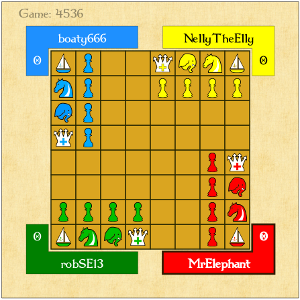
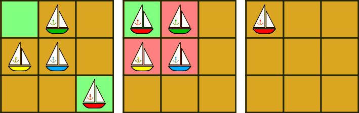
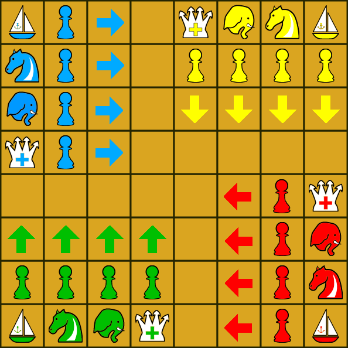

Imperial Chaturaji Rules
The rules for Imperial Chaturaji were forked from the
Chaturaji rules found on the chess.com forums.
These rules were adapted to create Imperial Chatuaji.

Overview
- The game is played on a board of eight by eight squares.
- There are four players.
- Each player has a piece set of a distinct colour.
- Each player starts with eight pieces; a king, an elephant, a knight, a boat and four pawns.
- The squares are not chequered.
- Players aim to win individually.
Moves of pieces
- The king and knight move as in orthodox chess.
- The elephant replaces the chess rook.
- The boat replaces the chess bishop but its movement is more restricted. It jumps two squares diagonally.
- Pawns move as in orthodox chess, but have no initial double move, and more complicated promotion rules.
- Pawns move in the expected direction, i.e. every pawn must move 6 times to get to their final rank.
- There is no castling in this form of chess.
Win, Loss & Draw
- When a player has lost all his pieces except his king, he's out. His king remains on the board and can be taken.
- There is no check or checkmate as the king can be captured like any other piece. The goal of the game is to defend your king and collect as many points as possible. Points are scored by capturing opponents' pieces, according to this scale:
Pawn - 1
Boat - 2
Knight - 3
Elephant - 4
King - 5.
- A score bonus of 54 points is awarded to a player who manages to
capture all three opponents' kings while his own king remains on the
board. The value is a sum of points of all pieces in three armies.
More information about the King
- Kings can be taken as with any other type of piece.
- A player who loses their king may not move and is out of the game. The player's pieces remain on the board and can be taken.
Additional rules specific to Imperial Chaturaji
- A player can't skip a move and must move one piece once on every turn.
- After a second player is defeated, the two remaining players enter the 'Sudden Death' phase. They are permitted a maximum of 10 subsequent moves.
When these moves expire, a score count decides the winner.
- If one of the two players loses all pieces except their king, the game finishes and a score count decides the winner.
- If one of the two players loses their king, the game ends. The player who took the king gets either 5 points (if they didn't take all 3 kings) or 54 points (if they did take all 3 kings). A score count then decides the winner.
A special move called boat triumph

All pieces take as they move, with one special case, called the triumph of the boat.
When a boat moves to form a square of four boats, then he takes the other three.
In other words, when a boat moves in such a way that a 2x2 square filled with boats is formed, it captures all three boats of other players. This rule is called boat triumph. This special case is unlikely to happen.

Each of the four players' pawns moves and captures in a different direction along the board, as one would expect from the initial player's setup. For example, the red pawns which start on the g-file move left across the board, promoting on the a-file. As in chess, pawns capture diagonally so can potentially reach any square on the other side of the board.
The pawn promotion rules are different to standard chess; one must promote to the piece that starts on the same file (or rank) of the promotion square (king included) assuming that the Conditions for Pawn Promotion are all satisfied.
The type of piece to which a pawn can promote, when it reaches the last rank, depends on the square it is on:
- On a1, a8, h1, h8, a pawn promotes to a boat.
- On a2, a7, b1, b8, g1, g8, h2, h7, a pawn promotes to a knight.
- On a3, a6, c1, c8, f1, f8, h3, h6, a pawn promotes to an elephant.
- On a4, a5, d1, d8, e1, e8, h4, h5, a pawn promotes to a whole new king.
- One can promote only after one's piece of that type has been captured.
- When a player owns three or four pawns, a pawn may not promote.
- When a player has one or two pawns, he may promote to knight or elephant, if a pawn is on the correct square.
- Only when a player owns one pawn and at most one boat, and no other pieces except his king, the pawn may promote to any type of piece (depending on the square, as above.)
- In all cases, when a pawn reaches the final rank but may not promote, the pawn remains as a pawn on the square on the final row.
- As soon as he may promote, the pawn is changed into the respective piece. In the mean time, the pawn can be taken as well.